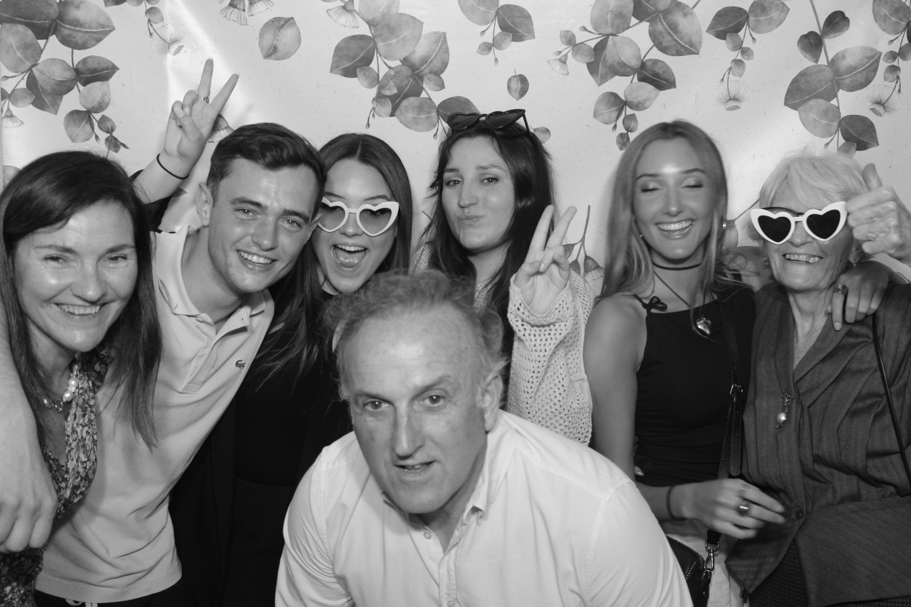
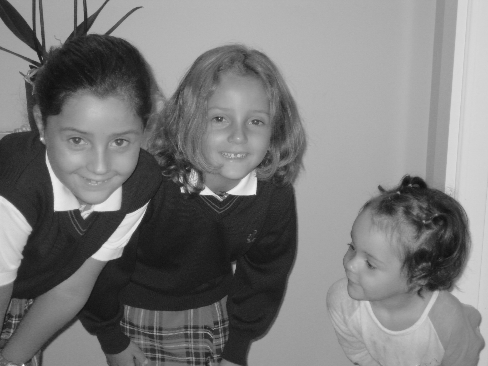

01 — Sobre mí
Ane
Ojinaga
Ayerra
Hola, soy Ane Ojinaga, una estudiante de Pamplona que actualmente cursa Administración y Dirección de Empresas en la Universidad de Navarra, junto con el Diploma en Innovación y Emprendimiento. Mi interés por el mundo de la empresa no es casualidad; lo he vivido de cerca en mi familia y siempre me ha gustado esa idea de esforzarse para sacar adelante un proyecto propio.
En el día a día, me considero una persona sencilla y responsable. Cuando trabajo en grupo, de forma natural me suelo encargar de repasar que todo esté bien y que lo que entregamos sea correcto; me gusta cuidar los detalles para que el resultado final sea el adecuado. También trato de estar al día con la tecnología, contando con un nivel intermedio en competencias digitales según el marco europeo DigComp.
Lo que más me mueve son las personas que quiero: mis padres, mis hermanas y mis amigos. Ellos son mi motivación para seguir aprendiendo y mejorando. Al final del día, más allá de los estudios, lo que de verdad me importa es que se me conozca por ser alguien empática y generosa.

Mi familia

Mis amigas

Mis hermanas y yo